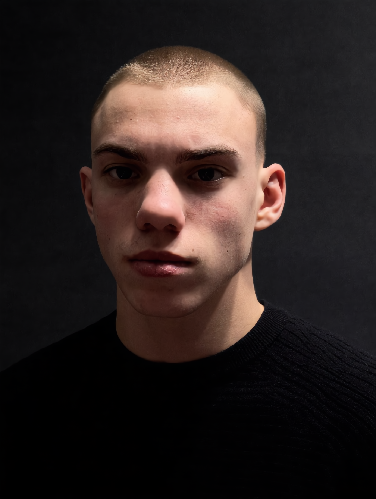

ARCHITECT: ANDRII T.
Principal system architect responsible for the operational transition from agile prototype loops to a hardened institutional monolith, designed for provenance-locked intelligence and execution fidelity at national scale.
THE TENURE
The tenure began with rapid prototyping cycles tuned for speed, then pivoted into disciplined systems engineering: schema hardening, deterministic processing paths, and operational safeguards. The current monolith was built to handle fifty states of heterogeneous real estate data under one cohesive decision framework, with throughput and lineage preserved under production-grade constraints.
ENGINEERING PHILOSOPHY
Every release follows deterministic outcomes and a strict zero-hallucination policy. The mandate is simple: speed has no value unless it is tethered to dependable signal integrity. In this stack, latency is optimized only when precision is preserved at 94.2% and above.
TECHNICAL PROVENANCE
- Multi-agent LangGraph workflows orchestrating role-specialized reasoning chains.
- Parallel ingestion pipelines normalizing 141+ origin-tracked data sources.
- Custom RAG architectures built for traceability, relevance control, and low-noise retrieval.
Breaking The 80% Barrier
SmartPropAI was engineered to solve the structural 80% precision ceiling that has constrained real estate intelligence for years. The objective was never volume for its own sake; it was confidence at execution time. The platform is built to produce investor-grade output with auditable provenance and decision-ready structure, not marketing hype disguised as analytics.